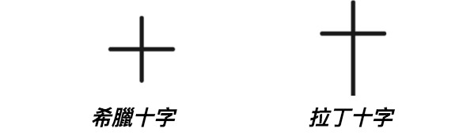
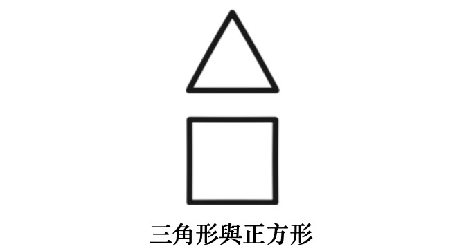
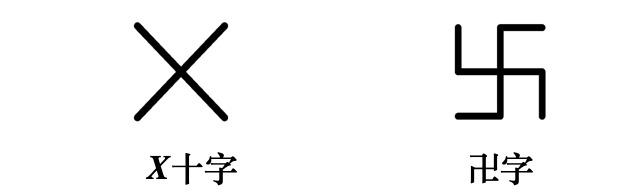
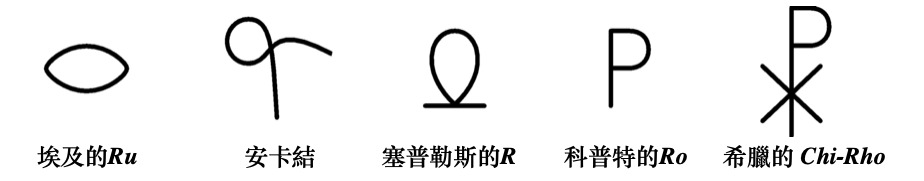
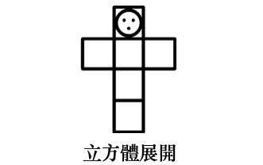

異象七：十字的象徵
紅寶石
神之愛的輝煌熱情
照亮人十字架上閃亮的玫瑰，
倘若人肯聆聽內在基督的訊息。
* * *
南方深藍的高空，
聖星的祝福十字閃爍；
那是智慧與法則的永恆標誌——
以三角與方形創造宇宙，圓圈將它環抱。
* * *
偉大聖子臉上，
痛苦的淚珠閃爍，
混著犧牲的殷紅血滴，如紅寶石落在顫動的大地；
刀槍刺穿祂時，痛苦的嘆息自聖潔胸膛發出；
我們心智灼傷，在內裡聽見祂說：
「我的神，我的神，為何離棄我？」
* * *
抑或後來，心智與祂同歡；
一陣歡騰之中，
祂道出最後的話語：
「哦，祢是我的神，我何等榮耀！」
異象七：十字的象徵
信使、馬烏與馬烏媞在天空中美妙的符號下靜立片刻，垂首，眼中含淚。
隨後，涅特魯-赫姆牽起他們的手，微笑辭別井的守護者，朝遠處閃著微光的白色大理石建築走去。
花香瀰漫，鮮艷的色彩染活空氣；三人徐行於這片榮耀中，陷入沉思。
「孩子們，可願聽一堂關於十字象徵的講課？」信使問道。
「哦，信使，我們當然要聽！」兩人齊聲叫道。
行至建築前，信使領兩位賓客走入其中一棟。
這是座大禮堂，聽眾坐於大理石席，聆聽一位身著白色飄逸長袍的祭司演講。涅特魯-赫姆、馬烏與馬烏媞悄然入座，專心聽那祭司續道：
「… 因此，無論我們如何解讀十字架上那兩句呼求，本質無別：『我的神，我的神，為何離棄我？』或，祭司接道：『我的神，我的神，祢何等榮耀我！』兩句皆蘊含極偉大的真理。
「兩者皆發生於偉大的啟悟之中。耶穌在客西馬尼園的苦難、被釘十字架與復活，昭示一種極高的啟悟形式，即第四啟悟，此時將契合涅槃層面；而此前三次啟悟，他逐漸預備並發展菩提意識。
「諸位皆知，第四啟悟可謂道途中點；第四與第五啟悟之間，尚需七次投生，亦即再經歷七次人世。這七次投生若發生，亦將迅速度過，因啟悟者已無需於每次轉世之間在星光界裡歇息。他已成阿羅漢——一位值得、有能力、受敬且圓滿之人，進化臻至高境。
「第四啟悟總伴隨十字架之苦，因啟悟者的所有親友彷彿暫棄他，只得獨自悲傷，然這段路途亦是他的榮耀；此時他被置於叛徒之中，每句話遭曲解，每個行為被歪曲；珍愛之物盡失，所愛之人皆離；罵聲臨身，神聖遭輕蔑拒斥；他對天父之愛的內在信仰甚至動搖，彷彿與一切神聖靈感和慰藉隔絕；歷經這一切磨難，若他仍持守信心，轉向神，那刻他才真正得著榮耀；天父伸出慈愛之手，扶起受難者，領他脫離盲目絕望之路，轉向看見與幸福之途。
這時，十字架的苦楚轉為高等心智與靈魂的恩賜，歡騰的合唱響徹所有天界——那啟悟者已學會超然於外物與境遇，他勝利地知曉自己與邏各斯本為一體，其餘盡是幻影與誘惑。十字架已被征服，光輝的道路筆直鋪展，直抵永恆；從一重榮耀通往另一重榮耀。
「基督教義中，前三重啟悟由誕生、洗禮與變容象徵；古埃及人進行第四啟悟時，則將候選者縛於木十字架上，經歷死亡、埋葬，墜入冥界，第三日自死中復活。古諺有云：『未經十字架，焉得冠冕。』
「十字記號若用於儀式或個人，便是極強的祝福，能抵禦黑暗力量——尤其當此人心中懷有深沉寧靜，並誠願世人同享此福。
若結合對聖父、聖子與聖靈的祈請，這記號的力量更增，其象徵亦多層次。

「活躍的邏各斯以等臂長的希臘十字為代表。邏各斯的第二面向——聖子，即受福三位一體的第二位，則由拉丁十字象徵；那是柄身較長的基督教十字架，用於一切祝福與驅魔儀式，將祭司意志印記於受施的人與物。巨力流經此標誌，從一祭司傳至另一祭司；或在敬拜儀式中自高處流向祭司；或對他人劃記時流向被劃記者。這助人銘記：每喚此名號，邪惡便不得近身，因而成為簡短的信仰宣告——當我們依次觸碰前額、太陽神經叢、左肩，終至右肩，便想起基督自天父降臨塵世，再自塵世降至低等星光界（左手途徑），繼而升至天父右側，永駐榮耀。
「常行此記號是好的。人易忘卻居於神之理想世界時所受的護佑；它能驅散一切不健康之念與影響，尤其當人易陷於惱怒、自私或其他惡念時。心智恆駐高等層面者或無需此類提醒，但此類人稀，故一般人多可受惠於這簡小儀式——這能逐退所有不快，存留一切美善。
「人類與其他無數種類的存有共處；常人雖不可見，它們卻力量強大。每當有人作出力量符號、或吐出力量話語，這些存有便聚於行儀者或言語者周身，冀望其發出令它們愉悅的思想與振動。它們需要此類振動；因此，一個人的思想、言語或符號愈崇高，所吸引的元素精靈類別便愈優。你會明白：此理不適用於天使存有，因祂們完美純潔，無需人類振動的扶助。
「每當人覺察自己暫失與天父之連結，失去完全的愛、寧靜、理解與合一，便該畫下十字的神聖標記，祈求主再次轉身，賜予祂的護佑與指引。誦讀福音書時，應畫十字三次，使心智、口舌與內心皆立志傳播真理，同時開啟額頭、喉嚨與胸膛三處靈性中心，迎接即將傾注的神聖影響。如此，神聖文本將成為力量的核心，由崇敬與感恩的思維氣場所環繞，激活心智與靈性官能。若開卷前先畫十字，便是開啟寶庫之門，神聖智慧將自此湧流，注入其存在。它使低等心智與高等心智諧調，從而協助內在大師的工作——大師此時能將智慧之瓶傾予渴求的心智；那心智正尋求與靈魂結合，通往神的領域。
「祈禱或研讀神聖文本後，當行最後的十字標記，此舉將強化整體努力，並鞏固心智與靈魂之間的連結。
「此記號的強大力量，可見於主教的祝聖儀式：祝聖者先在受祝聖的新主教心口畫十字，再於其手上畫十字，念道：『願你滿得靈性祝福。』於「靈性祝福」一語上又畫一記十字。此舉全然建立起直覺與情感間的直接通道，一旦直覺成熟發展，便能夠立即在物質界顯現其意圖。
「另有主教佩於胸前的十字架。其上鑲嵌七寶石，與祭壇石所嵌寶石相應（如自由天主教派所用）。當祭壇寶石感應到傾瀉的力量而閃閃發光時，主教胸前的十字架寶石亦隨之閃爍。神聖戒指受祭壇與十字架的珠寶共鳴，交織強化這股力量，向會眾乃至整個世界沛然傾注。
「在羅馬教會，這胸前十字架常內嵌聖物，或為真十字架的木屑。
「七顆寶石呼應七道光線。人若靠近十字架，與其相應的光線寶石便明滅閃動；倘若全然接納，必獲沛然之力與護佑。
「主教佩此十字架；羅馬教會儀式中，他將它懸於短披風之外、無袖法衣之內，因這是他與主的神聖紐帶——彷若一枚高度蓄能的電池，胸前十字架化作棱鏡，讓力量持續流經其身。故此，它在教會儀典中的作用極為強大：作用於主教，自他汲取力量，再將其光線灑向會眾。靈視者能見這些輝光，乃基督中三重之靈的顯現，惟具相同靈性映現的高度修行者方能感知。
「十字形態各異：有柄的埃及十字（又稱T字）、耆那教的卍字、基督教的十字架，皆為生成之象徵。公牛在諸般宇宙論中俱屬神聖，印度教、瑣羅亞斯德教、迦勒底、埃及皆然。同理，蛇乃智慧之徵。
「埃及式與基督教式十字，實為三角與方形的結合，亦即展開的立方。三角與方形的象形文字，向被視為男女原則之表徵，揭示神性演化的面向，恰如夜空中輝耀的南十字星座，其意涵與埃及有柄十字無異。

「十字蘊含的數字三與四，呈希伯來金燭台之形，立於至聖所內；三四相加得七，正合一週的天數，亦是太陽的七道光。七日一週，是月份年份的起源，故為誕生之時標。人附於十字架上，此象徵乃得圓滿，與人類起源之念相契；其形體遂等同生命之樹。
「十字與圓圈同為普世符號，居於符號序列之首；二者本身涵攝並宣示宏偉的科學真諦。這兩種符號與人類歷史等長，直指心理與生理奧秘之核心。
「歷來有思想家為闡釋十字中心之謎，將其象徵為宇宙臨在。此係謬見；無邊界者與無限者豈能受限於一中心？同理，基督顯現於十字架，亦不可解作神以耶穌基督之身個體化於該十字中心。
「X形十字與赫爾墨斯十字四臂指向四方，末端彎曲即成卍字，此乃雅利安種族最早象徵符號之一。卍字意謂中心不囿於任何個體，無論其何等完美。它更昭示：此原則（即神）存於人內，而人亦在祂之中——萬有生命皆然；居於神內，宛若水滴融於滄海；

指向四方的端點在無限中消融自身。末端彎曲亦表輪迴循環，人心必須歷經此徑方能捨棄小我，將心智投射於對無限、天界乃至神的構想之中。
「此十字之謎，蘊藏於赫耳墨斯《翠玉錄》二句之中：『分離土與火，提煉精微於粗糙……以絕頂智慧自地昇天，再從天降至地。』如是，卍字化為涵納十字的圓圈，旋即變作埃及天文十字——即圓圈包藏兩相勾連的T形，一桿向下，一桿向上。

「土火分離、精粗提煉，意指生命火花與心智脫離凡軀，其後自塵世『昇』往『天界』；歷經時日，再度降臨塵世投身下一輪迴。完美的T形，垂直下貫者為男性光線，水平橫陳者表女性原則；水平線上添一圓圈，便圓滿了伊希斯的三重屬性，此即神聖蛋的象形文字。
「所謂基督教十字之源起，遠較世人想像古老。《聖經武加大譯本》記載，以西結在敬畏主的猶大人額前烙下T字印記。古希伯來人使用的符號呈現如此樣貌，在埃及象形文字中，則以常見的基督教十字架形式出現，稱為 TAT，象徵穩定。這十字現於《啟示錄》在選民額前印上天父之名，即AO，二者分屬靈與物質，是首亦是末（靈居於物質之前）。

「摩西命百姓以血在門柱作記號，以區別將亡的埃及人，用的正是 T 形標誌；菲萊一處雕塑遺跡上，可見許多埃及手持十字架，半數屬荷魯斯使死者甦醒的護符。卐字與 T 字隨處可尋：復活節島雕像、古埃及、中亞、前基督時期的斯堪的納維亞皆有蹤跡。
「《民數記》第二十五章第四節記載：『讓這些人面向太陽，在主面前釘上十字架。』
「面朝太陽（而非背對）受釘，乃古埃及與印度啟悟儀式所用辭彙；開悟者通過秘儀諸般試煉後，將被縛於 T 形臥榻，而非釘死。
「此狀態持續三晝夜。據說其靈性自我在此期間『與諸神對話』，降入冥府（或稱阿門提、下界，名稱因各國而異）；他為彼界無形存有佈施行善，肉身則留於 T 形榻上，置於神廟地窖或地下洞穴。在埃及，啟悟者安放於大金字塔王室石棺，第三夜將屆時抬至入口廊道。指定時刻，初升旭日光芒滿映候選人恍惚面容，祭司-啟悟者誦出神聖言詞將其喚醒，受奧西里斯與智慧之神托特啟迪；祭司表面向『太陽-奧西里斯』發言，實則指向內在的『靈—太陽』，從而照亮新生之人。
「宇宙靈魂乃物質性理型在物質界的映象，是一切生命之源，是三界的生命法則。此即赫爾墨斯哲學家與古代聖賢所稱『七重性』，描繪為七重十字，其分支代表示光、熱、電、地磁、星光界輻射、運動及智性，亦即自我意識。
「基督教採用十字符號之前，它早用作區分開悟者與入門者的標誌，後者稱為『克雷斯托斯』。
「卡巴拉所用十字象徵元素對立與四元平衡。
「啟悟者或祭司畫十字時，手覆額頭念：『你屬於』，移至胸前續道：『那國度』，觸左肩：『正義』，再右肩：『與慈悲』；最後雙手交合說：『永世無盡。』另一版本流傳於入門者與大眾之間，不知前述之法。
「將求道者置於十字的啟悟儀式，亦為南美早期種族所知。山崖雕刻的一系列圖像中，人形自十字躍出，或情形反過來；因而人可視為十字，十字亦可視作人。
「另有一種啟悟形式：異象中現巨大金十字，緩緩轉動，顯出黑色元素精靈的直立身形，如人張臂。它向啟悟者鞠躬，靜待指令。此為考驗：啟悟者若命精靈效勞服從，立陷險境；若靜默不語，形體便消散，危險隨之渡過。
「圓中十字亦稱世俗十字，標誌人類與動物生命起源。圓圈取走僅餘十字，意味人已徹底墮入物質。圓中十字象徵純粹泛神論，與圓內 T 字、耆那十字或卐字同義。T（Tau）是字母 T 最古老形態，乃第三根種族象徵性墮落前的字符；此時自然演化致兩性分離，圖形遂成為剖開的圓（圓指無性生命），圓受修改或割裂。其後於第五根種族變為埃及生命符號安卡，再後來又成金星標誌。

「在西方卡巴拉中，圈內十字被稱作『玫瑰與十字』的結合，象徵宇宙顯現之前，蘊藏神秘生成的偉大奧秘。
「普遍解釋認為，十字架上的玫瑰代表人的靈魂（實為心智）寓於肉身。如我所言，玫瑰即指心智，它釘上十字架（進入人體），是為了在其中生長茁壯，並憑藉進化之路上積累的經驗與智慧，最終配得與神聖靈魂合一。
『願玫瑰在你十字架上盛開』是一句古老的問候，也是親切的祝願、兄弟般的祝福。
「有柄的埃及十字象徵『男－女』與『伊西斯－奧西里斯』，乃一切形體的生成原則，基於原初顯化，這適用於所有指向與意涵。卡巴拉教義中，『生命之樹』是有柄十字的有性面向。『Otz』一詞意為「樹」，在希伯來語中由兩個字母構成，數值分別為七與九，代表神聖女性數字七與男性能量數字九。
「對埃及人而言，數字七也是永恆生命的象徵；希臘字母 Z 形如兩個七，Ｚ 既是「我活著」（Zaô）的首字母，也是「眾生之父」宙斯（Zeus）的起首。
「有柄十字另含『誓言』、『盟約』之意，T 字頂端的圓圈相當於象形文字 Ru 轉正。此象形符號意指「門」、「出口」、「口」，此處指天空北區的誕生地，太陽由此重生。因此，有柄十字的圓圈以女性象徵標誌了北方出生地。正是在天空此域，「輪轉之母」七星女神在一年最初的循環中誕生了時間。

「有柄十字或稱安卡十字，其最初形狀為安卡結，此繩套包含括圓圈與十字。它代表大熊座在北方天空劃出的圓圈，這構成了最早時間中「一年」之基準。安卡十字的圓圈後來演變為塞普勒斯的 R（橫線上方的半圓）與科普特的 Ro（P）；後者又衍生出希臘的 Chi-Rho（帶交叉杠的大寫 P）。
「安卡結亦名繩索，可見於四臂印度濕婆神的右後手臂；Ru 符號也被視作大瑜伽士的第三隻眼，其姿態如印度苦行僧。
「T 字是神秘神聖智慧的Ａ與O，體現於托特（或赫爾默斯）的首尾字母；托特乃埃及字母的創制者。T 字也是猶太人與撒瑪利亞人字母表的最末字母，他們稱此字母為「終結」，或「圓滿」、「極點」與「安穩」。
「立方體展開後，其六面形成十字；直立部分含四個正方形，橫槓含三個，總計七個。

四象徵處於潛態的宇宙，即混沌物質，需經靈滲透方能活化。換言之，三角形須放棄其一維本性，散佈於物質之中，從而於三維空間築起顯化根基，使宇宙得以智性顯現；立方體的展開實現此點，故有柄十字象徵人、生成與生命。在埃及，安卡一詞意謂「靈魂」、「生命」與「血」；或指有靈、活躍之人——七重之人。
「再次回到卐字形式的十字：少有符號比此圖形更具真切的神秘意涵。它由數字六象徵，如同此數，指向天頂與底極、東南西北各方。此單元無所不在，映現於每一單元之中。它標誌「諸輪」的持續進化，亦是四元素這神聖四者在神秘與宇宙意義上的象徵；其四臂與畢達哥拉斯與赫爾墨斯的比例相關。受訓的啟悟者能以數學精度追溯宇宙的演化、捕捉可見與不可見者之間的連結，並推演人類與物種的初生。此為一切符號中最富哲學科學性、亦最易領悟者。它總括創造與進化的全部工程，涵蓋範疇自宇宙神譜至人類演化，從未知之神至電子——而後者之起源對科學而言，猶如那「一切-神」本身般未知。然古代聖者知曉此秘；卐字見於各古老民族的宗教符號，即為明證。
「卐字在《迦勒底數字書》中被稱為「工人的錘子」；《隱藏奧秘之書》也稱其為「錘子」。這錘子自燧石（或空間）擊出火花，諸火花便化為諸界。
它亦是雷神之錘，由矮人鍛造的魔法武器，用以抗衡巨人（或宇宙前的原初巨力）。
「它同時是煉金術、宇宙起源論、人類學與魔法的符號；其意涵須以七把鑰匙方能解開。
「若將它對應於微觀宇宙（即人），它標示人是天界與塵世的連結：右手指天，左手指地。此符號是科學週期、神聖週期與人類週期的樞紐；徹底領悟其義者，將從大幻象的苦海中解脫，其下透出的光輝，足以照破一切人為的陰謀與虛構的黑暗。
「對研習東方秘傳或外傳教義者而言，它意味著『一萬種真理』；這些真理隸屬於未見宇宙、原初宇宙論與神譜的奧秘。
「在西藏與蒙古，它見於佛圖與佛像心口，也總置於已故神秘主義者胸前，如同古埃及的帶柄十字。
「卐字有兩類，設計與方位各有變化。我們所探討者，其上臂指向右方，見於圖示。一切正道儀式魔法、儀軌或原則皆用此形。
「若其反轉，上臂朝左、下臂朝右，便成邪惡符號。凡異於正道類型的卐字，皆與黑暗及凶險相繫，將為佩戴者或使用者招致災禍。
「正如你所知，一切法則皆有兩面：善與惡、正與反；符號如此，萬事萬物亦如此。
「完美形態的卐字，為右道的神秘主義者所用；這是烙在活生生啟悟者心上的印記，有些人更將其永刻膚上，作為象徵與警示：當他們習得一萬種圓滿秘密，絕不可洩露於不配之人。
「基督教十字的七重，等同潘的七管笛，象徵自然的七種力量；亦對應七顆行星、七道映為光譜顏色的光線、七個音符。猶太人的金色殿燭臺，一側三座、一側四座，合為七——那是代表生成的陰性數字；《創世記》中，六日勞作以第七日為冠冕，亦成循環計算的根基。
「圓、十字與七，是最古老的原始符號。畢達哥拉斯及其門徒視數字七為三與四的結合，並以雙重方式詮釋。在他們看來，三角形是已顯現之神的最初概念，是其形象：「父—母—子」；正方形則是完美之數，為物質層面一切數字與事物的理型根源。然正方形屬次級完美，因其關乎物質世界；三角形對應希臘字母Δ，乃未知之神的載體。此點甚至見於神名——宙斯的拼寫：維奧蒂亞人作Δευς，即拉丁語的「神」（Deus）。這便是數字七在形上概念中，與現象世界之「七」的關聯；但為了世俗或外傳的解釋，其象徵被更動了：三角形或數字三，成為三種物質元素——氣、水、土——的象徵；正方形或數字四，則成為一切無形無相之物的本源。
「然而畢達哥拉斯學派又將七視為六與一，是六元組與單元的複合體；於是數字七成了不可見的中心，成為萬物的靈——凡六邊形之物，皆以中心為其第七屬性。數字七象徵十字，十字亦象徵數字七，因而具備單元的一切完美，堪稱眾數之數。正如絕對的統一性未經創造、不可分割，故其不屬數字，亦無數字能生之；七亦然：十以內的任何數字皆無法產生或構成它。

「頂點朝下的三角形，是濕的原則與水的象徵，而水為最初的元素，火潛藏其中；宇宙的第一顆種子，便投進了水或曰混沌。頂點朝上的三角形，則是火的象徵。兩符交錯，便產生所謂的所羅門之印（此名實為誤稱），此符衍生一切十數。其中心有一點，乃七重標記，此即人、即十字。兩個三角，揭示二元或「二」；其三角形象徵數字三；兩主三角形共一中心點，化為四元或四；五元生於三角相疊，輔以三邊，是為五；六點連綴成六元，即數字六；而此圖騰整體為七重：中心一點，故曰七元，是為七；此終極之數，涵蓋諸數。
「立方體展為十字，可見豎桿——陽性之徵——裂為四截；四是陰性之數，而十字橫桿（物質之線）則化為三份。此說似有矛盾，然因立方展開時，中面為豎橫所共，遂成中立，不屬任何一方（雖兩者共享）。是故，陽或靈之直桿仍為三元，而物質之桿則屬二元，為偶數，故屬陰性。中心點乃陰陽交會、靈與物質相融之處：象徵創造。數字三與數字四共構十字，令兩者和鳴，顯現自然之創生力；其中心點即崇高之愛。當愛經服務、犧牲與奉獻淨化，至高境界便等同神之愛。彼時它如神聖玫瑰於中心盛放，香氣升達天界，其聖潔、仁愛與奉獻之芬芳，純粹無瑕。
「整個自然將為之歡欣，其悠揚聲響與七行星之樂音共鳴；各星循軌搖曳，以洪亮凱歌交融他者之音，織就和諧。
「然則，縱使研究諸符號：自圓至十字，自Ｔ字至三角與正方，並藉此學會指著進化之路的符號，我們僅能見其果，而偉大第一因依舊隱匿；此乃更甚以往之奧秘。
「或可學知：種子萌為眾生的系譜樹，名曰宇宙，是三而一，乃種子之三重面貌：其形、色與質；然引導其生長之力，永不可知。
「此生命力究竟為何？何以令種子萌芽、迸發嫩芽，再成幹枝；而後枝條低垂，吐露自身之種，復又生根萌發，衍生他樹？然對欲探此顯化力量奧秘的求道者，有一答案——此力亦潛藏其內。
「你當知曉，一切物質現象，不過感官幻影，再由想像助長。在物質層面，無物可謂堅實，因此層面的萬物皆能藉某種『光線』（姑且稱之）顯為透明。
「靈視者無需此光，即可穿透物質帷幔。當他們開啟靈視之『光』，萬物皆融消；他們所感是真實，而非幻象與想像之境。看似堅實的牆垣，頓如玻璃；樹木、花草、走獸乃至諸般物質，盡皆消逝，恍若從未存有；是的，它們本未存有！
「我將略作演示，當你們跟著做時，請謹記方才所言。此小實驗中，我將展示物質生命與眾生如何初生。在此之前，容我補充：你們，與塵世眾生，若願意且足夠專注，皆可行此實驗。
「首先，你需領受此事實：物質層面的一切皆有生命；無所謂死物。凡可觸、可見、可感之物，皆有生命，即物質性生命。若無生命，你便無法觸見感知其存。『死』去的獸軀有生命，『死』去的樹幹有生命，一石、一礫、一沙、一雪、一雨，皆有生命。金屬、礦物、化學品乃至一切物類，皆然。它們活著、顫動、脈搏，與生命共振！
「此生命或物質性質有四元：氫、氮、氧、碳；而它們自身亦有生命！
「碳乃一切有機質之基；氧助燃燒，為所有有機生命之活化劑；氫於氧中燃盡後，成最穩化合物，遍存眾生體中；氮乃惰氣，為動物呼吸時與氧混合之載體；它滲入一切有機質。當四元於有機質中相合，只須添入生命火花、活性之火點燃機體，便能生長繁衍。
「我將以想像一個單細胞向你展示此事；只要你恆心嘗試，你亦能為之。」
言畢，講者靜立，凝神專注；片刻，一顆膠質小球浮於其前空中，剔透微泛磷光。
「此即最初之元。」他說道。
「其象徵是圓，無限的圓，亦即「無數字」與「零」；它象徵黑暗，象徵未顯化。唯當另一個數字列在它之前，它才活轉過來，成為一個活躍的數字。此乃胚種——若要賦予它生命，必須讓光的光線（神之意念）照入；胚種隨即因火花而煥發，其符號也變為帶點的圓。正如我們能憑意念力構想出這胚種，我們亦可將生命的神之意念投射其中。
他召來一位聽眾上前。

「現在，請你凝神於此胚芽，」他說，「並從你內在，向它投射一絲生命的精質。」弟子依言而行。很快，一縷微光浮現，小球開始緩緩迴旋。
「眼前演示，恰似動物體內旋轉的靈性中心運作方式。」講師道，「為向諸位展示這些胚種如何進化繁衍，我將加速此過程。請細看。」
片刻，一線細光將細胞剖為兩半；每一半都保留了內在的發光元素，兩者仍相連，繼續緩緩旋轉。接著，它們徐徐分離，各自繞軸自轉，亦互相繞行；待慢慢充盈成形，皆成完滿小球，至此已有兩顆；形體完美如一，無從區別。這過程重複數次，終生成許多閃爍著生命的「胚種-細胞」，如微縮宇宙般環繞運行。
「此處所見景象，正是靈界中迴旋的原子。它們由神之意念所生，這增殖的過程將永續不息。欲將這些造物帶入物質世界，下一步是添上一條垂直線，將圓的橫向分界連至下半圓周；換言之，圓內呈現的已非橫線，而是一個T字。此符號一現，即意味靈性事物依其進化路徑，即將落入物質生成，或曰墜入物質界；下半的垂直線代表男性，與上半的女性相連——兩性共寓一身。
「隨後，進入下一階段：圓內出現完整的十字。
「正如動物與人體靈性中心的情形，其旋轉將不斷加速，光芒愈盛，終使這些小球化為燃燒的能量球，疾速迴旋，每一細胞皆蘊含一個宇宙。物質世界的電子於焉成形，它們的組合逐漸發展為植物、動物之軀，最終成就人身；一切皆依循這些電子的演化路徑。全過程，可總結於一個圓圈符號，內含數字1。
「這代表十個天界果實，源於男、女兩種子，初時肉眼不可見；因其在進入具象的物質身體前，全然屬靈。這象形文字，象徵最初的神聖顯化，包含精確比例的力量。首個圓是空無，而那垂直線則是太初，是原初一；它是邏各斯的話語，其他數字自此湧流，直至數字9，達至擴張的極限。
「當人身在肉體中，與靈性結合而趨於完整，我們便發現以下原則。人身的四項基本物質原則是：
- 動物慾望的原則，與動物存在不可分離；稱為「慾體」。
- 生命的載體：這是種惰性載體，身體解體後不久即消散；此即星光體。
- 催生一切生命現象的活躍力量；此即生命或生命能量。
- 身體本身的粗重物質。
「與此四項人身原則相結合的，是神性的三重顯現：
- 未顯的邏各斯，自神聖宇宙領域映照於人類靈性界，作為宇宙之靈或神聖靈魂，全然覺知其個體性，並與每個人相聯。
- 普遍宇宙的生命原則，而人類的心智僅是其微小部分；它擁有完整的個體性、以及對本體的意識；它是人類神聖靈的一部分，為進化之故而投身世間，直至有資格與其更好的另一半——靈魂——結合。
- 宇宙的活躍智性，映照於人類智性之中；心智憑此超越動物，逐步進化。
「此為人的七重原則；前四者屬物質性，構成一個方形，後三者屬靈性，以三角形代表；此即七重之人。」
演說至此結束。涅特魯-赫姆、馬烏、馬烏媞等人向講者致謝後，隨眾聽眾離開了神廟。步至外頭，但見漫天雲霞輝煌燦金；望向地平，色彩漸次沉入深紫與淡紫，間有亮眼的洋紅與熒光的暗紫；天穹中鑲著片片閃亮的湛藍，宛如粼粼湖灣，兩側龐然的霧氣團高懸，流轉著璀璨光澤，氣象宏闊。
「孩子們，方才的演說，可還喜歡？」信使問道。
「這給了我們很多可堪玩味的念想。」馬烏答道，「但我原以為，聽講的靈魂早該知曉這一切。他們不是在塵世歷經了千百萬年的轉生？他們不是得通曉萬事，才有資格踏入這神聖領域？」
信使淺淺一笑：「孩子，知識在人間備受尊崇，卻非通往天界的通行證。那空泛美貌背後的醜陋、崇高抱負底下的膚淺、王座之上的卑微、巨富之中的貧瘠、自詡正義背後的罪孽——也都行不通。」
「相較於天界智慧，塵世的才智不過是愚昧的無知。」
「要進入這些界域（即便尚未抵達天界，僅是外緣），『靈魂-心智』尚需具備另一些品性：樸素中透出的智慧；愛裡蘊藏的美；謙卑所成就的崇高；因無償奉獻而豐盈的財富；以及一份純潔的信賴——信那全父全母所予的慈愛與護佑。
「那在山坡上牧羊的、在田地裡耕作的、在深海中航行的——他們比起那些積攢不義之財而自矜的富人、比起高踞王座以鐵腕威嚇臣民的權貴、比起只信物質證據而譏嘲一切神與靈的學究，都更接近神。後者永不能踏入此地，儘管他們或許能向你闡釋世間萬事，且自以為無所不知。」
馬烏追問：「但靈魂在獲准進入之前，總該先懂得演講者所用的符號、及其所象徵的神聖智慧吧？若未學會使用這些符號，是否便因太過無知，而無從領會自己在此界域中的地位？」
「孩子，符號可有千般詮釋；唯有臻至智慧之境者，方能得當地運用它們。符號背後藏著浩大的奧秘，但唯有開悟的靈魂能徹悟其義。古時曾有智者擁有這般智慧。他們歷世輪迴，一心砥礪心智，終能窺見符號的真義。他們有明師指引，此師能甄選與培育合適的弟子。許多人曾想進入古老的神秘學校，但獲錄取者寥寥；能踏入高等秘儀核心者，更是鳳毛麟角。」
「如今這般開悟者已近乎絕跡；較之此世過往的任一時期，現下愈發稀少。因此，你方才所見的學院便建於此地，讓已得淨化之人得以習得塵世難覓的智慧。」
「當一個人修行足夠、內在綻放純淨之光，他便能步入星光界火焰之境，沐浴永恆的白晝，聆聽講論；諸天使將為他祝禱。
「當神聖之愛的花在心中綻蕊，而我執不存，他便可踏入此間；慈愛的上師將擁他入懷，以神之印記為他膏沐：一朵深紅玫瑰自他胸前升起。
「當他珍愛同胞、無求回報地服務，他便可踏入此間，與曾為他人奉獻者並肩而坐；他們將親吻他的額頭，尊他為高貴的王子。
「孩子，這便是來此的必備品格；凡具足這些美德者，無一會遭拒，因為他們已與神諧鳴，美德的果實便是深沉的寧靜。」
「如此說來，修得自身高貴者皆有希望。」馬烏說道，「在這片樂土獲取居留資格，竟是這般簡單。」
「那麼其他神廟又教些什麼呢？」馬烏問道。
「教導每一個已淨化的『靈魂-心智』必須研習的課業，以躋身更高界域。」涅特魯-赫姆回答，「孩子們，還想再聽些講習麼？」
「哦，請務必。」他們喊道；神聖的信使便領他們走向下一座建築，那兒有更深的啟示等候著。